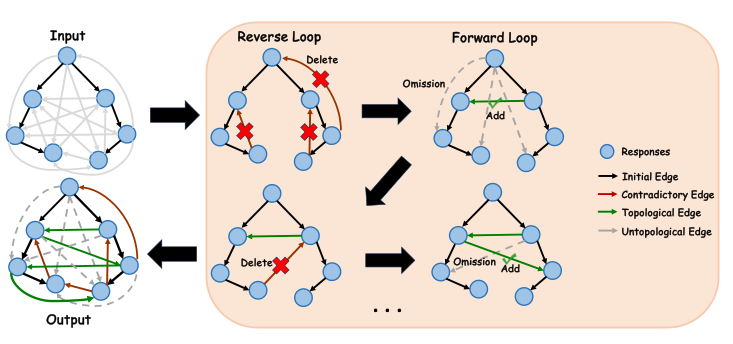

arXiv preprint 2024Preference consistency
ContraSolver: Self-Alignment of Language Models by Resolving Internal Preference Contradictions
A model's preferences can contradict each other; ContraSolver finds cycles in those judgments and selects reliable comparisons to improve alignment through DPO.
- Result
- AdvBench safe-response rate for Llama-2-7b-chat: 90.00% vs 85.96% for Max-Confidence selection of the same number of pairs; human-judged harmless rate 91.0% vs 86.0%.
- New vs prior
- Self-alignment methods such as ReST train on all of a model’s self-labeled preference pairs; this work selects pairs by resolving contradictory cycles in the model’s preference graph.
- Limitation
- The method assumes that higher-confidence preferences are more reliable, which the paper notes is not scientifically validated, and it cannot represent ties between responses.

A collection of plausible judgments can be inconsistent
DPO (direct preference optimization) assumes that each response has one latent reward, which implies a strict ordering of the responses to a prompt. Yet a model judging pairs separately can prefer A to B, B to C and C to A; each judgment looks plausible, but together they conflict.
Selecting pairs by confidence alone ignores where a comparison sits in this structure, keeping redundant preferences and missing those that explain a contradiction. ContraSolver treats the responses as a directed graph whose edges are preferences, so a directed cycle exposes a conflict that no single ranking can represent.
Closest prior work
Self-alignment methods such as ReST (Gulcehre et al., 2023) and Guo et al. (2024) train a model on pairwise preferences it generates itself, and, as the paper argues, trust all of those labels regardless of the model’s proficiency. A separate line of work questions whether preferences are transitive and studies learning under a general preference oracle, for example Nash learning from human feedback (Munos et al., 2023). ContraSolver stays within DPO but uses the cycles in a self-annotated preference graph to decide which self-labeled pairs to train on.
Consistency improves, but it is not fully solved
90.00 vs 85.96
AdvBench safe-response rate (%) · ContraSolver vs Max-Confidence
Llama-2-7b-chat after DPO on the same number of self-labeled pairs; Vanilla scores 65.77. Safety is judged by automatic substring matching.
13.30% → 10.40%
SafeEdit training prompts with a cyclic preference graph
Self-alignment of Llama-2-7b-chat reduces contradictions on all four datasets, but does not remove them.
Measured · Table 4
How often a prompt’s self-judged preference graph contains a cycle
Share of training prompts with at least one contradiction, before and after DPO on ContraSolver-selected pairs. The graph nodes are the same sampled responses used for data construction.
Llama-2-7b-chat
Vicuna-7b
Values from Table 4. Cycles decrease on all eight model–dataset pairs but remain in 10.40–26.60% of prompts; the measurement uses training prompts, not new responses.
Random and Max-Confidence selection (keep the most confident pairs) use as many pairs as ContraSolver, so the comparison isolates which pairs are chosen. On positive-sentiment generation, Llama-2-7b-chat reaches 87.2% with ContraSolver, 80.3% with Max-Confidence and 79.5% with random selection.
The graph analysis measures consistency directly: for both models and all four datasets, fewer training prompts have a cyclic preference graph after self-alignment, but many cycles remain. The analysis reuses the original responses on training prompts, so it does not test new responses.
Table 1 (Llama-2-7b-chat rows). Safe-response rate (%) over three sampled responses per prompt, higher is better, computed by substring matching; Llama-2-7b-chat after DPO on pairs chosen by each selection method (Vanilla = no self-alignment). Random and Max-Confidence select the same number of preference pairs as ContraSolver, and substring matching is an automatic proxy for safety. Source ↗
| Method | SafeEdit (test) | AdvBench | MaliciousInstruct |
|---|---|---|---|
| Vanilla | 56.67% | 65.77% | 62.00% |
| Random | 56.22% | 71.92% | 70.00% |
| Max-Confidence | 62.96% | 85.96% | 83.00% |
| ContraSolver | 68.37% | 90.00% | 84.00% |
Method proposed in the paper
Scope. Results rely on the model’s own preference labels and on automatic metrics: substring matching for safety and GPT-4 judgments for instruction following and summarization. Read the study ↗
Research summary
While substantial advancements have been made in developing large language models (LLMs), achieving control over their behavior can be difficult. Direct preference optimization (DPO) assumes the existence of a latent reward function to evaluate the responses of LLMs. This assumption indicates a strict preference ordering of different responses to the same input. However, there always exist contradictions of preference in LLMs according to our experimental observations. In this paper, we construct a graph structure of the preference relationship among different responses with self-annotation to find contradictions in the preference order. We propose ContraSolver, an algorithm that traverses all edges on the preference graph to identify those that might cause contradictions. ContraSolver initializes the graph with a maximum spanning tree and identifies contradictory edges, prioritizing the resolution of low-confidence preferences while preserving high-confidence ones. Experimental results on four different generation tasks show that the performance of different LLMs can be largely improved through our completely unsupervised self-alignment. Furthermore, by analyzing the preference graphs of LLMs with and without self-alignment by ContraSolver, we quantify the reduction in contradictions, suggesting that resolving preference contradictions is crucial for achieving better alignment performance.
Full paper ↗Citation BibTeX
@misc{zhang2024contrasolverselfalignmentlanguagemodels,
title={ContraSolver: Self-Alignment of Language Models by Resolving Internal Preference Contradictions},
author={Xu Zhang and Xunjian Yin and Xiaojun Wan},
year={2024},
eprint={2406.08842},
archivePrefix={arXiv},
primaryClass={cs.CL},
url={https://arxiv.org/abs/2406.08842}
}